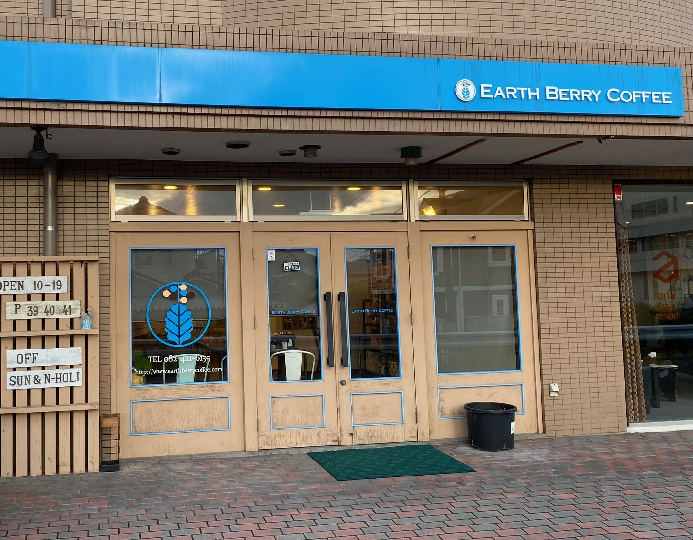

お家で簡単！
幸せ時間を過ごせる最強趣味
コーヒーとの出会い
コーヒーを初めて飲んだのはいつだろうか？そんなことを考えても答えは出てきません。記憶にあるのは大学受験期に、眠気冷ましにコーヒーをたくさん飲んでいました。ブラックコーヒーを飲めるようになったのはちょうどその時でしょう。この時は間違いなく「眠気を冷ますために飲む」といった感じでした。
この考えが変わったのは大学を卒業した当たりでした。大学院に進んだ友人の元を尋ねると、コーヒーセットがありました。ケトル・サーバー・ドリッパー・手動ミルの４点セット。当然、淹れてくれることになりましたが、ちょうど豆がなくなっていたらしくコーヒー屋さんについていくことになりました。尋ねたコーヒー屋さんは広島県にある「EARTH BERRY COFFEE」というコーヒー屋さん。
なんとこの店、店主が淹れてくれたコーヒーを無料で試飲できるんです！！ここで飲んだエチオピアのコーヒーが以上においしくて...
なんだこの香りは！？これがコーヒーか！！！
って感じです。フルーティーなワインの香りというか、花の香りというか、とにかく衝撃が走り、そこから大のコーヒーファンになりました。
コーヒーはどこで入手するの？
私のコーヒーの入手先はコーヒー豆専門店か、みんな大好きKALDIです。普段飲むコーヒーはKALDIのコーヒー、休日のちょっと贅沢時間を過ごしたいときにはコーヒー豆専門店のコーヒーを飲みます。甘い洋菓子と苦いコーヒーの組み合わせは、最高以外の何物でもありません！
コーヒーの選び方
コーヒーは豆の種類と焙煎度によって味が異なります。栽培地域や焙煎具合によって、それにあうスイーツも変わりますが、何でもおいしいので迷いすぎないことが重要です。しかし、まずは
- 浅めの苦味少なめあっさり系
- バランスの取れたすっきり系
- 深めの苦味多めのどっしり系
以上のどれが好みなのかを把握できるといいですね。それが把握できれば、「お店の人に伝える」か「豆の説明欄のゲージを参考にする」のどちらかで、はずれのない選び方ができるようになります。ぜひ、自分の好みを把握して最高のコーヒーライフの第一歩を。
おうちカフェに必要なもの
好きなコーヒーを把握したらおうちカフェの準備です。必要なものは
・ドリッパー
・ペーパーフィルター
・ケトル(口が細いものが理想)
この３点セットです。豆はお店で挽いてもらえるのでミルは必要ありません。コーヒーの入れ方はいろいろありますが、まずはハンドドリップで、コーヒーの香りを楽しんじゃってください！！